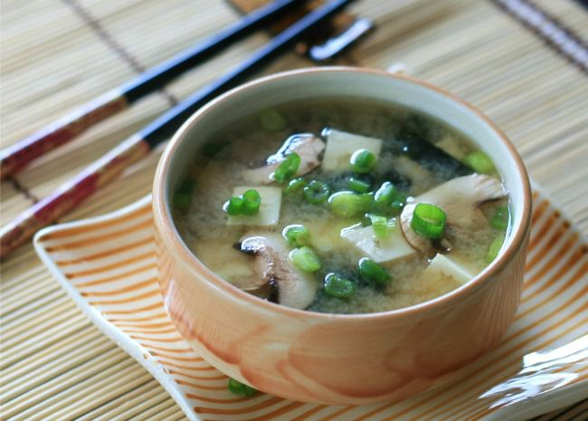

Miso Soup

Description
Miso soup is a traditional Japanese soup that starts with a dashi stock and is flavored with miso paste.
Dashi is made from dried seaweed and dried fish. Miso paste is a paste made from soybeans and koji rice.
Ingredients
- 4 cups water
- 2 teaspoons dashi granules
- 3 tablespoons miso paste
- green onions
Steps to follow:
- Combine water and dashi granules in a medium saucepan over medium-high heat; bring to a boil.
- Reduce heat to medium and whisk in miso paste. Stir in tofu.
- Separate the layers of green onions, and add them to the soup.
- Simmer gently for 2 to 3 minutes before serving.